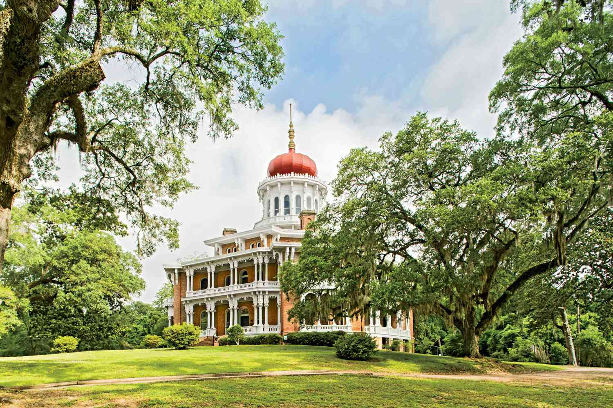

Top 5 Tennessee & Mississippi River Destinations for the Great Loop
Memphis
Explore the birthplace of blues, rock 'n' roll, and soul music in Memphis. Visit iconic attractions like Graceland,
the National Civil Rights Museum, and Beale Street, known for its vibrant nightlife and live music scene. Don't forget to try the famous Memphis-style barbecue!
Natchez

Step back in time in Natchez, known for its beautifully preserved antebellum homes and historic plantations.
Take a scenic drive along the Natchez Trace Parkway, stopping at overlooks and hiking trails to experience the region's
natural beauty. Indulge in the famous Natchez mint juleps for a taste of southern hospitality.
Vicksburg
Immerse yourself in Civil War history in Vicksburg, home to the Vicksburg National Military Park and Historic Cairo Museum.
Explore the city's riverfront murals, antique shops, and waterfront casinos for a blend of culture and entertainment.
Don't miss the chance to take a riverboat cruise along the mighty Mississippi.
New Orleans

Experience the vibrant culture and culinary delights of New Orleans, where the Mississippi River meets the Gulf of Mexico.
Wander through the historic French Quarter, sample Creole cuisine, and enjoy live jazz music in lively bars and clubs. Don't
forget to explore the city's haunted history with a guided ghost tour!
Baton Rouge
Discover the capital city of Louisiana, Baton Rouge, with its blend of southern charm and urban sophistication.
Explore historic sites like the Louisiana State Capitol, enjoy outdoor activities along the Mississippi River,
and indulge in Cajun and Creole cuisine. Don't miss the opportunity to visit the LSU campus and catch a thrilling football game!